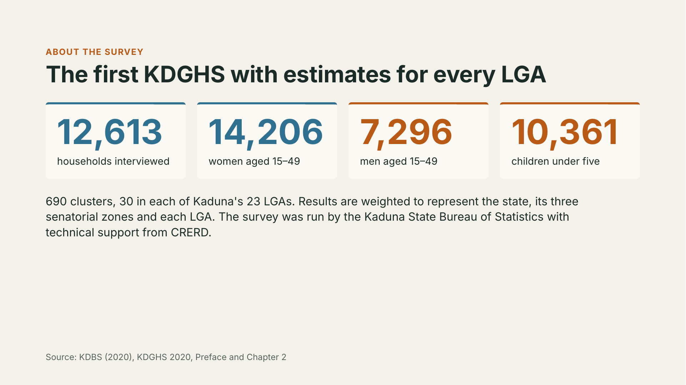
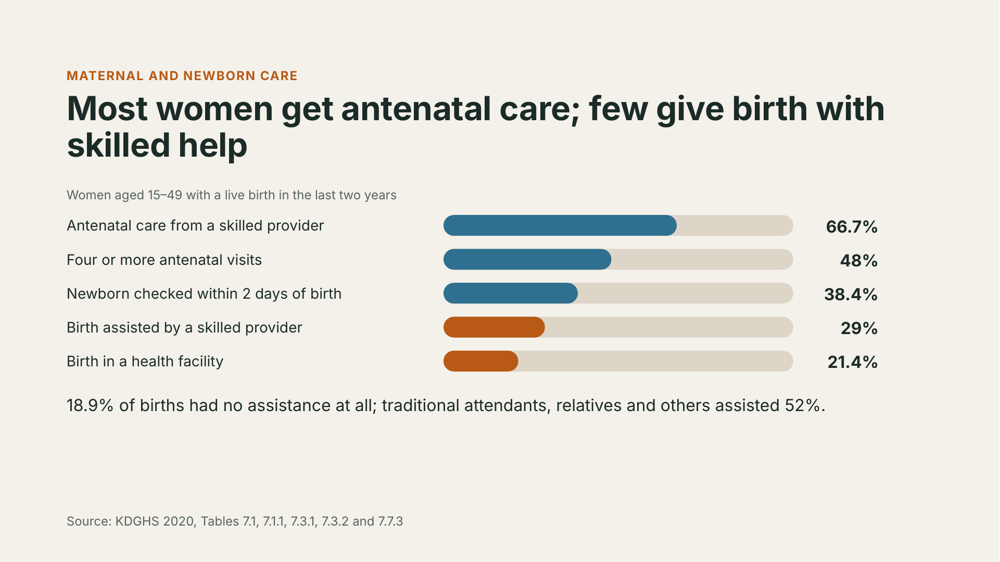
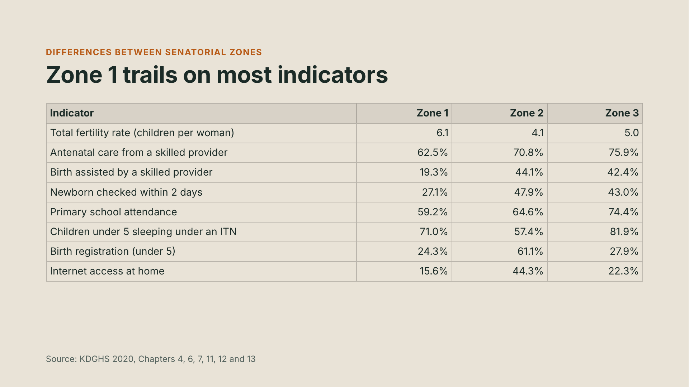
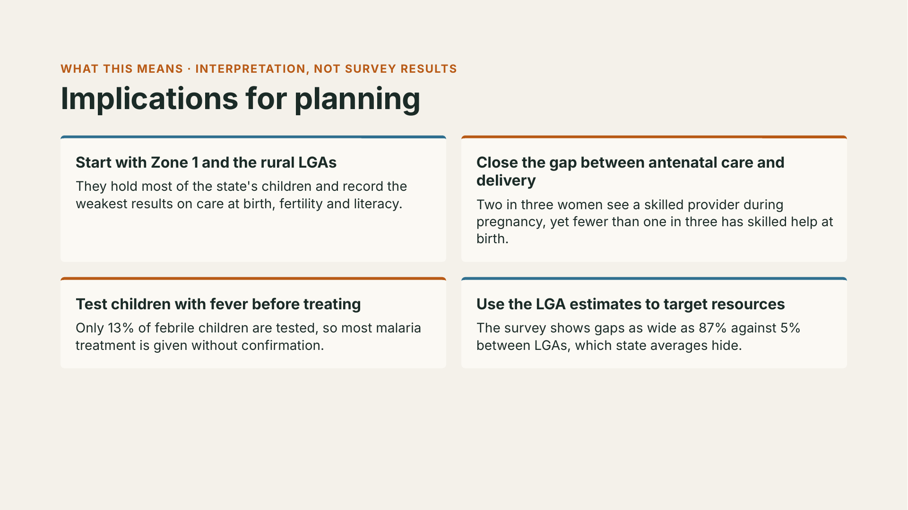

Kaduna State General Household Survey 2020: key insights
Skilled help at birth is 87.1% in Chikun and 4.9% in Soba, against a state average of 29%. The average hides that gap.

Problem
State averages in the 2020 survey hide wide gaps between LGAs, senatorial zones and wealth groups, so they can send resources to the wrong places.
What I did
- Summarised the survey report into a 16-slide key-insights deck.
- Showed results by LGA, zone and household wealth, not only for the state.
- Separated survey results from interpretation, and labelled the planning implications as interpretation.
About the data
Run by the Kaduna State Bureau of Statistics with technical support from CRERD. The third in the series and the first with estimates for every LGA. 12,613 households, 14,206 women aged 15 to 49, 7,296 men aged 15 to 49 and 10,361 children under five, in 690 clusters (30 in each of the 23 LGAs). Results are weighted to represent the state, its three senatorial zones and each LGA.
Results
- Skilled help at birth: 87.1% in Chikun, 4.9% in Soba, 29% for the state.
- By household wealth: 73.5% for the richest fifth and 13.3% for the poorest fifth.
- Two in three women (66.7%) get antenatal care from a skilled provider, yet only 29% have skilled help at birth.
- Zone 1 trails on most indicators.
- Only 13% of children with a fever are tested for malaria.
Limits
- Child mortality can only be trusted at state level, because the birth-history data was too weak to go lower.
- Vaccination coverage leans on mothers’ recall: cards were shown for 29.6% of children.
- Only 11.1% of babies were weighed at birth, so low birth weight is uncertain.
Recommendations
- Start with Zone 1 and the rural LGAs.
- Close the gap between antenatal care and delivery.
- Test children with fever before treating them.
- Use the LGA estimates to target resources.
Tools
More images



